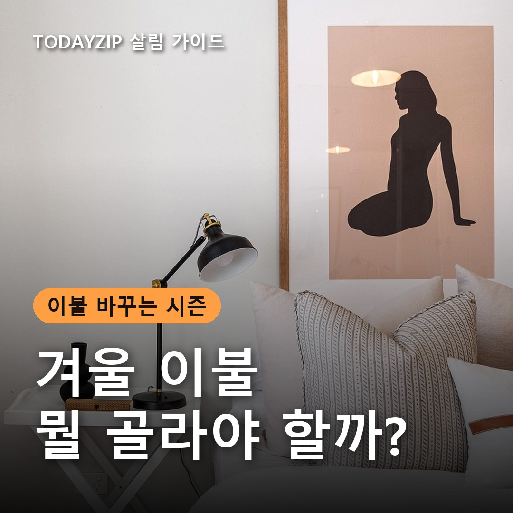
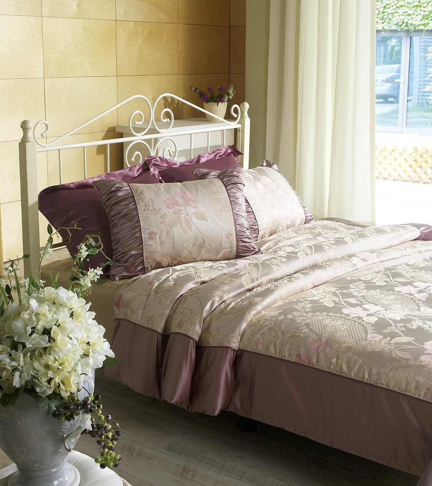
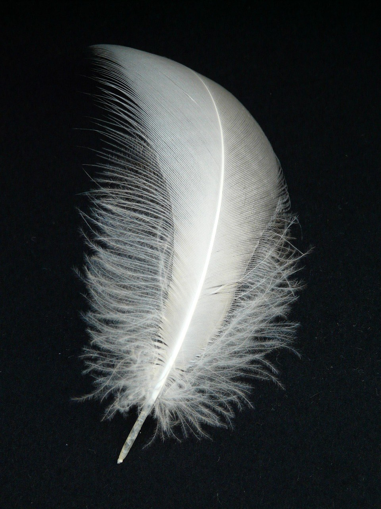
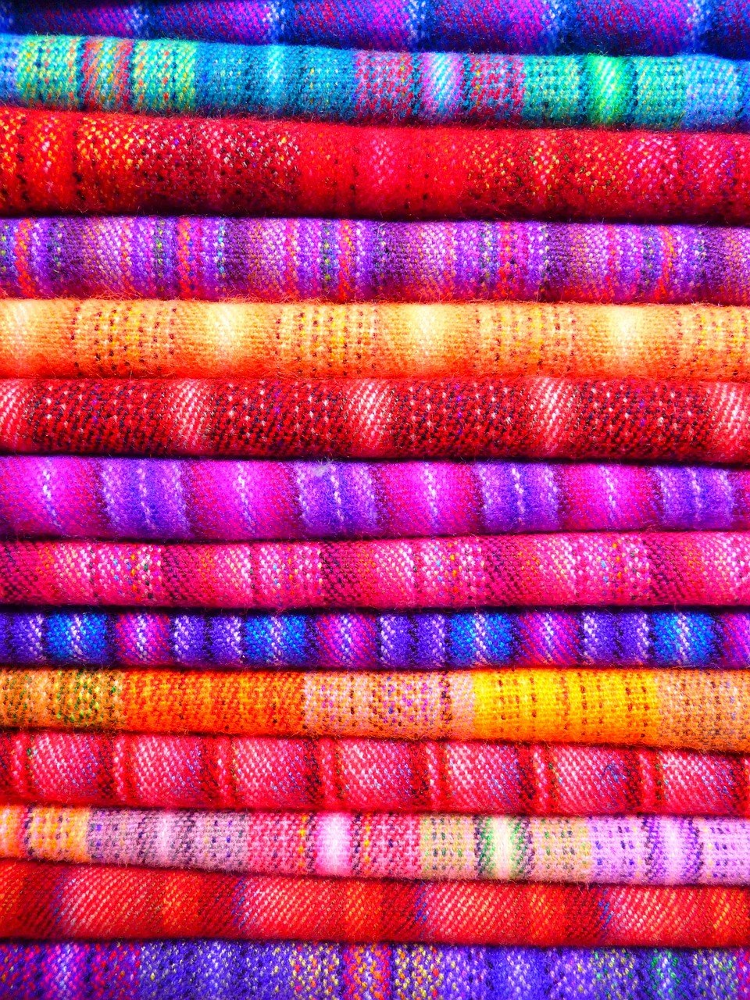
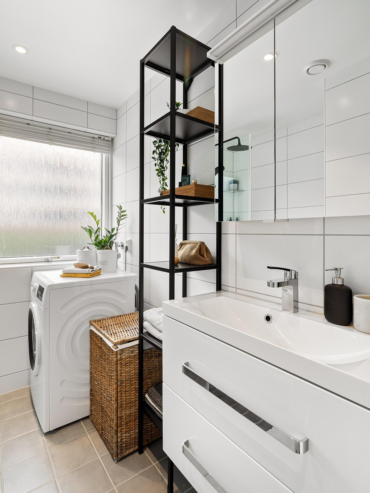

[사진 1: 썸네일]
여름 이불을 정리하고 나면 바로 고민이 시작되죠. 작년 이불은 좀 얇은 것 같고, 새로 사자니 구스, 극세사, 마이크로화이바까지 이름도 가격도 제각각이에요.
겨울 이불 고르는 법은 의외로 단순해요. 소재마다 따뜻해지는 방식과 관리법이 다르니, 우리 집 세탁 여건과 추위 정도에 맞추면 돼요. 오늘은 소재별 차이를 표로 비교하고, 살 때 태그에서 확인할 것들을 체크리스트로 정리해 드릴게요.
[사진 2]
이불이 따뜻한 이유는 소재마다 달라요. 구스는 솜털이 부풀며 공기를 많이 머금어 따뜻하고, 극세사는 아주 가는 섬유가 촘촘하게 몸에 닿아 포근함을 줘요. 마이크로화이바 솜은 합성 충전재가 공기층을 만드는 방식이에요.
그래서 같은 겨울 이불이라도 무게, 세탁 방법, 촉감이 크게 달라요. 가벼운 걸 원하는지, 집에서 자주 빨고 싶은지를 먼저 정하면 선택지가 확 줄어들어요.
아래 표는 일반적인 특징이에요. 같은 소재라도 충전량과 원단에 따라 차이가 있으니 기준으로만 참고하세요.
| 구분 | 구스(거위털) | 극세사 | 마이크로화이바 솜 |
|---|---|---|---|
| 따뜻한 방식 | 솜털이 부풀어 공기층 형성 | 촘촘한 섬유가 몸에 밀착 | 합성 솜이 공기층 형성 |
| 무게감 | 가벼운 편 | 무거운 편 | 중간 |
| 세탁 | 라벨 확인, 손이 많이 감 | 물세탁 쉬움 | 물세탁 쉬움 |
| 장점 | 가볍고 보온성 좋음 | 포근한 촉감, 관리 편함 | 가격 부담 적고 관리 편함 |
| 단점 | 가격이 높고 털 빠짐 가능 | 정전기, 보풀 생기기 쉬움 | 오래 쓰면 솜이 꺼지기 쉬움 |
| 잘 맞는 집 | 추위 많이 타고 가벼운 이불 선호 | 포근한 촉감 선호, 자주 빨래 | 아이 방, 자취방, 자주 세탁 |
[사진 3]
첫째는 솜털 비율이에요. 태그의 90:10, 80:20 같은 숫자는 솜털과 깃털의 비율로, 솜털이 많을수록 가볍고 부드러운 편이에요. 둘째는 필파워로, 눌렀다 놓았을 때 다시 부풀어 오르는 힘이에요. 숫자가 높을수록 공기를 많이 품는다고 보면 돼요.
셋째가 가장 중요한 충전량(g)이에요. 솜털 비율과 필파워가 좋아도 충전량이 적으면 덜 따뜻해요. 같은 크기라면 충전량을 나란히 비교하세요. 원산지와 충전재 가공 국가가 따로 적혀 있는 경우도 있으니 구분해서 보세요.
[사진 4]
극세사는 아주 가는 섬유로 짠 원단이라 손에 닿는 느낌이 포근하고, 집 세탁기로 빨기 쉬워요. 대신 정전기가 잘 생기고, 오래 쓰면 보풀이 올라올 수 있어요. 무게감이 있는 편이라 묵직한 이불을 좋아하는 분께 잘 맞아요.
마이크로화이바 솜 이불은 겉감 안에 합성 솜을 넣은 형태예요. 가격 부담이 적고 물세탁이 쉬워 아이 방이나 자취방에 많이 써요. 다만 오래 쓰면 솜이 눌려 꺼질 수 있으니 누빔(퀼팅)이 촘촘한 제품이 솜 쏠림이 덜해요.
[사진 5]
겨울 이불은 크고 무거워서 사고 나서 바꾸기가 번거로워요. 장바구니에 담기 전에 아래 항목을 확인하세요.
Q. 솜털 비율이 높으면 무조건 더 따뜻한가요?
A. 아니에요. 보온은 충전량의 영향이 커요. 솜털 비율, 필파워, 충전량을 함께 보고 같은 크기끼리 비교하세요.
Q. 극세사 정전기는 어떻게 줄이나요?
A. 세탁할 때 섬유유연제를 적당히 쓰고, 실내가 건조하면 습도를 조금 올려 주면 정전기가 덜 생겨요.
정리하면, 가볍고 따뜻한 걸 원하면 구스, 포근한 촉감과 쉬운 세탁이 우선이면 극세사, 부담 없이 자주 빨고 싶다면 마이크로화이바 솜이에요. 어떤 겨울 이불이든 태그의 충전량과 세탁 라벨부터 확인하는 게 겨울 이불 고르는 법의 핵심이에요.
여러분은 어떤 이불을 덮고 계신가요? 겨울 이불 고를 때 꼭 보는 기준이 있다면 댓글로 나눠 주세요.
인스타그램 @todayzip.info 에서 살림 꿀팁을 30초 영상으로도 볼 수 있어요.